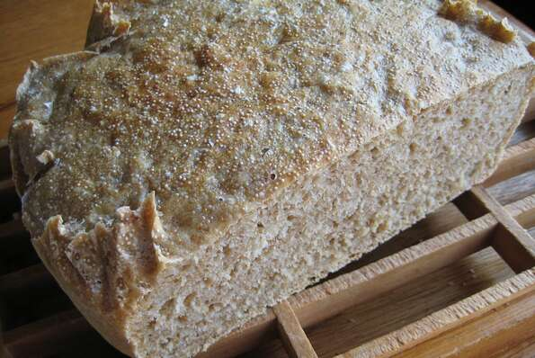

Artisan No-Knead Breadt

Description
This was my first time baking with amaranth and I am totally sold on its nutty flavor. I prefer baking no-knead
breads in a Dutch oven, mostly cause it's so easy and produces a great crust! This recipe makes one large loaf,
which I usually cut in the middle to freeze half.
Ingredients
- 1 cup amaranth
- 4 1/2 teaspoons active dry yeast
- 2 3/4 cups water
- 4 1/2 cups all-purpose flour
- 1 cups bread flour
- 1 tablespoon salt
- 1 tablespoon all-purpose flour
Steps
- Heat a skillet over medium heat and pour in amaranth; cook and stir until toasted and fragrant, 3 to 5 minutes.
Remove from heat and cool.
- Dissolve yeast in 1/4 cup lukewarm water in a small bowl. Let stand until bubbly, about 5 minutes.
- Mix remaining 2 1/2 cups water with toasted amaranth, yeast mixture, all-purpose flour, bread flour, and salt in
a
large plastic container with a lid with a wooden spoon until well combined. Cover and let rise in a warm,
draft-free
place until doubled in volume, about 2 hours.
- Dust a cutting board with 1 tablespoon all-purpose flour. Turn the dough out onto the board and briefly knead
with
floured hands. Shape into a ball.
- Line a large bowl with a piece of parchment paper. Place dough in the bowl and cover with a clean dish towel;
let
rise until nearly doubled in volume, about 1 1/2 hours.
- Preheat oven to 450 degrees F (230 degrees C) after dough has been rising for 45 minutes. Place a lidded Dutch
oven
inside after 25 minutes.
- Remove hot Dutch oven from the oven using oven mitts. Place dough carefully inside, lifting it up with the
parchment
paper. Cut any parchment paper that is peeking out of the Dutch oven with kitchen shears. Cover with the hot lid.
- Bake bread covered in the preheated oven for 30 minutes. Remove the lid and continue baking until top is golden
brown, about 10 minutes. Lift bread out of the Dutch oven with the parchment paper using oven mitts and tap the
bottom; if it sounds hollow, bread is done. Let cool for at least 1 hour on a wire rack.